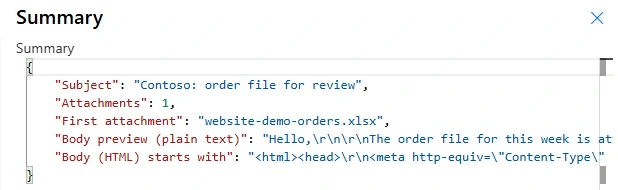

- Power Automate
- Level 7 · Files, email and documents · 1 of 7
Email attachments and file content
Many business processes start with a file in an email: an order sheet, an invoice, a signed form. A flow can send files as attachments, read the attachments of incoming mail, and save them where the team works. The key is understanding how file content travels between actions.
One flow, both directions
The demo reads an Excel file from SharePoint, emails it as an attachment, waits for the email to arrive, reads it back from the Inbox and saves the attachment to SharePoint under a new name.


Sending a file
In Send an email (V2), open Show all and add an attachment with a Name and Content. The content comes straight from a file action:
body('Get_order_file')?['$content']| Piece | What it does |
|---|---|
Get_order_file | SharePoint Get file content using path. |
?['$content'] | The file itself, as Base64 text. Outlook turns it back into a file. |
Saving attachments that arrive
Get emails (V3) (or the trigger When a new email arrives) has an Include attachments setting. Turn it on, then loop over the attachments:
base64ToBinary(items('Save_each_attachment')?['contentBytes'])| Piece | What it does |
|---|---|
items('Save_each_attachment') | The current attachment in the loop. |
?['contentBytes'] | Its content as Base64 text. |
base64ToBinary(...) | Turns the text back into the real file for SharePoint Create file. |
Use items('Save_each_attachment')?['name'] for the file name, with a prefix or date so files don't overwrite each other.
New to this? Start from the basics optional
Base64: a way of writing a file as text so it can travel inside a flow. Attachments arrive as Base64 and must be converted back with base64ToBinary() before saving.
Inline images: logos in an email signature also count as attachments. Skip them with a condition on isInline, or by file type.
Build it step by step optional
- Add the trigger When a new email arrives (V3) and set Include attachments and Only with attachments to Yes.
- Add Apply to each over the trigger's Attachments.
- Inside, add a Condition:
isInlineis equal tofalse. - In the Yes branch, add SharePoint Create file: file name from the attachment name, content
base64ToBinary(items('Apply_to_each')?['contentBytes']). - Send yourself a test email with one attachment and a signature logo, and check that only the real file is saved.
Common mistakes
- Saving
contentByteswithoutbase64ToBinary(). The file is created but won't open. - Forgetting Include attachments. The attachments list is then empty.
- Saving signature images as if they were documents.
- Using the same file name for every email, so each save overwrites the last.